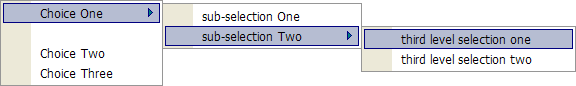

UI_POPUP_MENU()
Syntax
Result as C = UI_POPUP_MENU( Menu_Data as C [, Code as C ] )
|
Argument |
Description |
|
Result |
The user's selection from the popup menu. |
|
Menu_Data |
A CR-LF delimited list of menu entries. |
|
Code |
Xbasic code that responds to menu selections by examining the value of a_command. The code should be bracketed by <<%code% and %code%. |
Description
The UI_POPUP_MENU() displays a menu and returns the user's selection in both Result and a_command.
Limitations
Desktop applications only.
Evaluating the User's Selection
Whether from a menu bar, icon bar, button, or hot spot, the UI_POPUP_MENU() function will display a multi-level drop down menu. The UI_POPUP_MENU() function is an easy and flexible method to create your own menus with all the richness of a professional looking menu with icon and conditional capabilities. By default, the function positions the menu at the cursor location. So putting the UI_POPUP_MENU() function on a button's onPush event will position the menu at the button. To begin exploring the UI_POPUP_MENU() function, put the following code on the onPush event of a button placed on a form:
|
vMenuItems = <<%a% Choice One Choice Two Choice Three %a% ui_popup_menu(vMenuItems) |
The variable, vMenuItems, is a CR-LF delimited
string that contains the menu choices displayed by the UI_POPUP_MENU()
function.
The above code produces the following drop down menu:
Normally, you would want to respond to the user's selection, but the above code does not do this. You can respond to the user's selection either inside or outside the UI_POPUP_MENU() function. The following syntax demonstrates handling the users selection within UI_POPUP_MENU() function:
|
ui_popup_menu(vMenuItems,<<%code% if a_command = "Choice One" ui_msg_box("The User Selected:",a_command) else ui_msg_box("Choice One NOT Selected!","The user did not select Choice One") end if %code%) |
The a_command variable is internal to Alpha Five and holds the user's selection. Checking the value of a_command will reveal the selection, and allow you to process it. For menus with many choices, you may want to process the user's selection outside of the UI_POPUP_MENU() function. It really makes no difference, but it may make the code slightly more readable. The a_command variable is not available outside of the UI_POPUP_MENU() function. Instead, you evaluate the return value (in this case vPopupReturn ) of the UI_POPUP_MENU() function.
|
vPopupReturn = ui_popup_menu(vMenuItems) if vPopupReturn = "Choice One" ui_msg_box("The User Selected:",vPopupReturn) else ui_msg_box("Choice One NOT Selected!","The user did not select Choice One") end if |
Cascading Drop Down Menus
Assume you want two sub-selections to be available to the user if they select "Choice One". The following code does this:
|
vMenuItems = <<%a% Choice One | sub-selection One Choice One | sub-selection Two Choice Two Choice Three %a% vPopupReturn = ui_popup_menu(vMenuItems) |
This code displays the following menu:
The pipe symbol, "|" on the keyboard (above the backslash), defines the break between the first and second level menu items. You can continue to create lower level cascading menu selections as the following demonstrates:
|
vMenuItems = <<%a% Choice One | sub-selection One Choice One | sub-selection Two | third level selection one Choice One | sub-selection Two | third level selection two Choice Two Choice Three %a% vPopupReturn = ui_popup_menu(vMenuItems) |
This code displays the following menu:
If you want to separate Choice One from the other two choices, place "{sp}" on its own line:
|
vMenuItems = <<%a% Choice One | sub-selection One Choice One | sub-selection Two | third level selection one Choice One | sub-selection Two | third level selection two {sp} Choice Two Choice Three %a% vPopupReturn = ui_popup_menu(vMenuItems) |
This code displays the following menu:

You can further separate Choice One by creating a line in the menu using the '-' command, as in the following:
|
vMenuItems = <<%a% Choice One | sub-selection One Choice One | sub-selection Two | third level selection one Choice One | sub-selection Two | third level selection two - Choice Two Choice Three %a% vPopupReturn = ui_popup_menu(vMenuItems) |
This code displays the following menu:
The UI_POPUP_MENU() function automatically expands horizontally to accommodate the length of the menu, but if you want to force a larger horizontal size, you can use the "{tab}" command as in:
|
vMenuItems = <<%a% Choice One | sub-selection One Choice One | sub-selection Two | third level selection one Choice One | sub-selection Two | - Choice One | sub-selection Two | third level selection two - Choice Two {tab} Choice Three %a% vPopupReturn = ui_popup_menu(vMenuItems) |
This code displays the following menu:
Adding Graphics
Alpha Anywhere contains a rich selection of icons built into the program that are available for your use. To see the internal icons, type the following command in the Interactive Window :
|
A5_prompt_for_imagename() |
The following example uses the hammer icon by placing the command "{I=$a5_hammer}" before each line of "Choice One".
|
vMenuItems = <<%a% {I=$a5_hammer}Choice One | sub-selection One {I=$a5_hammer}Choice One | sub-selection Two | third level selection one {I=$a5_hammer}Choice One | sub-selection Two | - {I=$a5_hammer}Choice One | sub-selection Two | third level selection two - Choice Two {tab} Choice Three %a% vPopupReturn = ui_popup_menu(vMenuItems) |
This code displays the following menu:
Because there are several levels of sub-menu's associated with "Choice One", you need to have the icon command in each line of choice one. The following code puts this icon on the last selection in the third level menu:
Evaluation Issues
The commands to add icons, and other commands such as {tab}, affect the return value of the UI_POPUP_MENU() function. In the preceding code, if the user selects "third level selection two", the a_command or the vPopupReturn variables would contain:
|
{I=$a5_halt}third level selection two |
If you prefer a more explicit return value, you can specifically define the return value of a selection by using the ""{data=}" command. Assume you want a value of "Shut Down" returned if the user selects the "third level selection two" choice. Using the command, "{data=Shut Down}" in the following code does this:
|
vMenuItems = <<%a% {I=$a5_hammer}Choice One | sub-selection One {I=$a5_hammer}Choice One | sub-selection Two | third level selection one {I=$a5_hammer}Choice One | sub-selection Two | - {I=$a5_hammer}Choice One | sub-selection Two | {DATA=Shut Down}{I=$a5_halt}third level selection two - Choice Two {tab} Choice Three %a% vPopupReturn = ui_popup_menu(vMenuItems) |
Be sure not to precede the "{DATA=}" command with a space, or it will not work. This code displays the following menu:
Enabling and Disabling Menu Entries
You can conditionally enable or disable any of the menu choices with the "{enable=}" command. The logical variable vFlag demonstrates this. In the following code vFlag is set to false (.f.) value. The command "{enable=vFlag}" is immediately in front of "Choice Two".
|
dim vFlag as L vFlag = .F. vMenuItems = <<%a% {I=$a5_hammer}Choice One | sub-selection One {I=$a5_hammer}Choice One | sub-selection Two | third level selection one {I=$a5_hammer}Choice One | sub-selection Two | - {I=$a5_hammer}Choice One | sub-selection Two | {DATA=Shut Down}{I=$a5_halt}third level selection two - {ENABLE=vFlag}Choice Two {tab} Choice Three %a% vPopupReturn = ui_popup_menu(vMenuItems) |
This code displays the following menu:
As you can see, "Choice Two" is now disabled and grayed out. Setting the vFlag variable to a true value (.t.) enables "Choice Two".
Positioning the Menu
One last command I want to point out is the "{position}" command. By default, Alpha Anywhere brings up your menu where ever the cursor is located. By using the "{position=x,y}" command , where x is the horizontal axis and y the vertical axis (in inches), you can set where the menu is displayed. You can also use the constant, "mouse", to use the current mouse position to replace either the x or y axis. The following example positions the menu down 2 inches, but directly below the cursor location.
|
dim vFlag as L vFlag = .F. vMenuItems = <<%a% {POSITION=mouse,2}{I=$a5_hammer}Choice One | sub-selection One {I=$a5_hammer}Choice One | sub-selection Two | third level selection one {I=$a5_hammer}Choice One | sub-selection Two | - {I=$a5_hammer}Choice One | sub-selection Two | {DATA=Shut Down}{I=$a5_halt}third level selection two - {ENABLE=vFlag}Choice Two {tab} Choice Three %a% vPopupReturn = ui_popup_menu(vMenuItems) |
Thanks To
Jim Chapman
See Also
UI_POPUP_STYLED_MENU(), Menu Functions